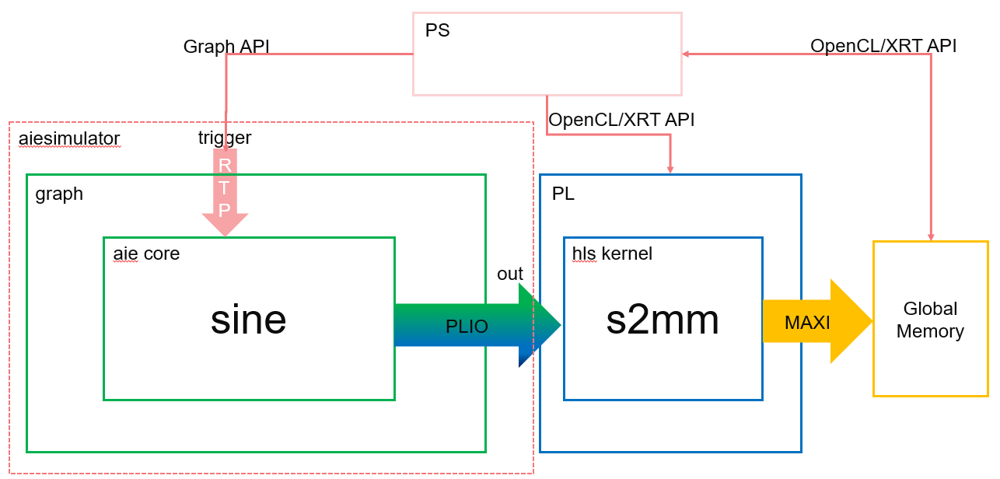
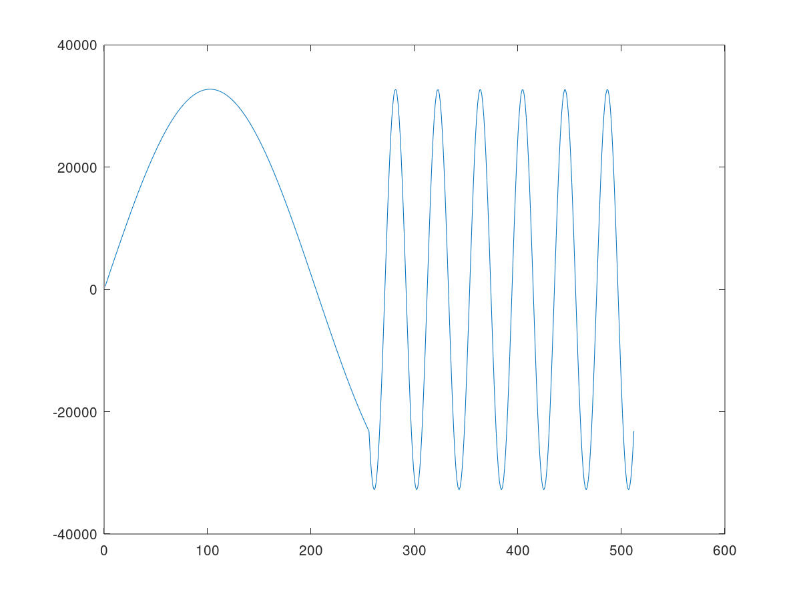

AI Engine Runtime Parameter Reconfiguration Tutorial |
Synchronous Update of Scalar RTP¶
Kernel execution depends on the availability of windows of data on their inputs, and the space to write windows of data on their outputs. This example illustrates a complementary method, whereby a kernel will only get triggered to run after a write of data from another processor. This can be an ARM processor or another AI Engine.
In this example, a write from an ARM processor causes a partial sine wave to be generated using the direct digital synthesis (DDS) kernel on the AI Engine. The ARM processor can control the frequency of the sine wave by writing different values to the runtime parameter. In HW and HW Cosim flow, the AI Engine output is streamed to the PL kernels, and the PS controls the running AI Engine and PL. The following figure shows this example.

Note: The default working directory in this step is “step1”, unless specified explicitly.
Review Graph Programming Code¶
Examine the header file, (
aie/dds.h), of the sine kernel (DDS):void sine(const int32 phase_increment, output_window_cint16 * owin);
Now examine
aie/kernels/dds.cc, notice howphase_incrementis used in the sine function:phase_in += (phase_increment << 6); cint16 scvalues = sincos(phase_in << 14); //sincos is an instrinsic (see readme)
Examine
aie/graph.handaie/graph.cpp. These are provided as a starting point to specify the data flow graph of this example.In
graph.h, the kernel objectdds, the graph input porttrigger, and the graph output portoutare declared in theddsgraph class. The dds kernel object is bound to thesinefunction declared in the includeddds.hheader. The dds kernel output is connected to the graph output. It tells the compiler that the source for the function is inkernels/dds.cc.In
graph.cpp, an instance of theddsgraph,gr, is instantiated. The graph output is connected toplatform.sink[0], which will be directed todata/output.txt:using namespace adf; PLIO *dout = new PLIO("Dataout", plio_32_bits, "data/output.txt"); adf::simulation::platform<0,1> platform(dout); ddsgraph gr; adf::connect<> net0(gr.out, platform.sink[0]);
In the
main()function, graphinit(),run(), andend()are called to initialize, run, and wait to be ended.gr.init(); gr.run(4); … gr.end();
The graph
run()has been called with the parameter4to specify the iteration number of the graph. Otherwise, it will run forever.
Review RTP Update Code¶
Examine
aie/graph.hagain. The following line is to connect the trigger input port of the graph to the first input port of the dds kernel (i.e., thephase_incrementparameter of thesinefunction).adf::connect<adf::parameter>(trigger, dds.in[0]);
The syntax of this connection is:
adf::connect<adf::parameter>(input_port&, output_port&);
Note that you need to use the template class argument
adf::parameterto specialize the connection type to the parameter type (because you are now connecting parameters and not windows of data). The parameter does not need to be sized in the same way as a window, because the compiler can always determine its size.Examine
aie/graph.cpp. You can see the lines of code to update the RTP. Note that the number of updates matches the number of iterations specified ingr.run(4).gr.update(gr.trigger,10); gr.update(gr.trigger,10); gr.update(gr.trigger,100); gr.update(gr.trigger,100);
The graph update calls update:
the trigger input with a value of 10 in the ping buffer
the trigger input with a value of 10 in the pong buffer
the trigger input with a value of 100 in the ping buffer
the trigger input with a value of 100 in the pong buffer
The syntax of the graph update function is:
void adf::graph::update(input_port &portName, int value);
Because the
runtimeparameter in this example is synchronous, the graph execution on the AI Engine will start after the first update call for one iteration, then wait for the next trigger by the next update call. Four consecutive update calls will run the graph for four iterations, where the first two iterations use 10 as the value for thephase_incrementparameter and the last two iterations use 100.
Run AI Engine compiler and AI Engine simulator¶
Run the AI Engine compiler and the AI Engine simulator to verify the functional correctness of the design. Note that
graph.cppis only used for AI Engine simulator, which is a SystemC simulation.The make command to run the AI Engine compiler to generate the AI Engine design graph (
libadf.a) is:make aie
The corresponding command for aiecompiler is:
aiecompiler -platform=$PLATFORM_REPO_PATHS/xilinx_vck190_es1_base_202020_1/xilinx_vck190_es1_base_202020_1.xpfm -include="./aie" -include="./data" -include="./aie/kernels" -include="./" -workdir=./Work aie/graph.cpp
Switches for the AI Engine are as follows:
-platform: specifies the path to the target platform-include: specifies the path to find header and source files-workdir: specifies the output directory. By default, the compiler generates all its output into a subdirectory calledWork.-aie/graph.cpp: specifies the graph source file
For more information about AI Engine programming and tools, refer to Versal ACAP AI Engine Programming Environment User Guide (UG1076).
After the graph has been compiled, run
aiesimulatorusing the following make command:make aiesim
The corresponding AI Engine simulator command is:
aiesimulator --pkg-dir=./Work
After simulation completes, you should see the
output.txtfile inaiesimulator_output/data. The output file contains output data and timestamps. You can compare the generatedoutput.txtfile with the golden reference file (data/golden.txt) using the following commands in command line:grep -v T aiesimulator_output/data/output.txt > aiesimulator_output/data/output_data.txt diff -w aiesimulator_output/data/output_data.txt ./data/golden.txt
The timestamps in
output.txtare removed in the new output fileoutput_data.txt. The new output file should match the data ingolden.txt. If the files match it is normal to see no output from the diff command.If you are using MATLAB or Octave, you can use the following script to visualize the data:
data=load('./aiesimulator_output/data/output_data.txt', '-ascii'); plot(data(:,1))
This plots the first column (real part) of the output complex data.

In aie/kernels/dds.cc, the sine kernel function uses the sincos intrinsic with the phase parameter to generate 32-bit integer concatenating Sine (bits [31:16]) and Cosine (bits [15:0]) in signed Q.15 fixed-point format. The 32-bit integer output samples are cast and stored in a cint16 window. As a result, the first column (real part) represents a cosine waveform. In the four iterations, the first two iterations use a value of 10 as the phase_increment parameter and the last two iterations use 100, so you see the cosine waveform frequency increases in the middle of the plot.
You can then use the following line to plot the second column (imaginary part) of the output complex data.
plot(data(:,2))
The following plot shows the sine waveform generated by the
sinekernel function with the frequency changed in the middle of the simulation iterations.

Build for Hardware Emulation and Hardware Flow¶
In the previous step, you generated the AI Engine design graph (libadf.a) using the AI Engine compiler. Note that the graph has instantiated a PLIO (in aie/graph.cpp), which will be connected to the PL side.
PLIO *dout = new PLIO("Dataout", plio_32_bits, "data/output.txt");
Here, plio_32_bits indicates the interface to the PL side is 32 bits wide. In the PL side, an HLS kernel s2mm will be instantiated. It will receive stream data from the AI Engine graph, and output data to global memory, which will be read by the host code in the PS.
Note: In this section, the make commands apply to hw_emu mode by default. Taking the hw_emu mode as an example, to target hw mode, add TARGET=hw to the make commands. For detailed commands, change the -t hw_emu option to -t hw.
To compile the HLS PL kernel, run the following make command:
make kernels
The corresponding v++ compiler command is as follows:
v++ -c --platform xilinx_vck190_es1_base_202020_1 -k s2mm s2mm.cpp -o s2mm.xo --verbose --save-temps
Switches for the v++ compiler are as follows:
-c: compiles the kernel source into Xilinx object (.xo) files.--platform: specifies the name of a supported platform as specified by thePLATFORM_REPO_PATHSenvironment variable, or the full path to the platform.xpfmfile.-k: specifies the kernel name.
The next step is to link the AI Engine graph and PL kernels to generate the hardware platform. The make command for this is as follows:
make xclbin
This make take 10 minutes or more to complete. The corresponding v++ linker command is as follows:
v++ -g -l --platform xilinx_vck190_es1_base_202020_1 pl_kernels/s2mm.xo libadf.a -t hw_emu --save-temps --verbose --config system.cfg -o vck190_aie_base_graph_hw_emu.xclbin
Switches for the v++ linker are as follows:
-l: links the PL kernels, AI Engine graph and platform into an FPGA binary file (xclbin).-t: specifies the link target,hwfor hardware run,hw_emufor HW emulation.--config: specifies the configuration file. The configuration file (system.cfg), specifies stream connections between the Graph and PL kernels, and other optional selections.
After generating the hardware platform, host code (sw/host.cpp) is to be compiled using the following make command:
make host
The detailed commands for compiling the host code are as follows:
${CXX} -std=c++14 -I$XILINX_HLS/include/ -I$PLATFORM_REPO_PATHS/sw/versal/xilinx-versal-common-v2020.2/sysroots/aarch64-xilinx-linux//usr/include/xrt/ -O0 -g -Wall -c -fmessage-length=0 --sysroot=$PLATFORM_REPO_PATHS/sw/versal/xilinx-versal-common-v2020.2/sysroots/aarch64-xilinx-linux/ -I$XILINX_VITIS/aietools/include -I../ -I../aie -o aie_control_xrt.o aie_control_xrt.cpp
${CXX} -std=c++14 -I$XILINX_HLS/include/ -I$PLATFORM_REPO_PATHS/sw/versal/xilinx-versal-common-v2020.2/sysroots/aarch64-xilinx-linux//usr/include/xrt/ -O0 -g -Wall -c -fmessage-length=0 --sysroot=$PLATFORM_REPO_PATHS/sw/versal/xilinx-versal-common-v2020.2/sysroots/aarch64-xilinx-linux/ -I$XILINX_VITIS/aietools/include -I../ -I../aie -o host.o host.cpp
${CXX} -o ../host.exe aie_control_xrt.o host.o -ladf_api_xrt -lgcc -lc -lxrt_coreutil -lxilinxopencl -lpthread -lrt -ldl -lcrypt -lstdc++ -L$PLATFORM_REPO_PATHS/sw/versal/xilinx-versal-common-v2020.2/sysroots/aarch64-xilinx-linux//usr/lib/ --sysroot=$PLATFORM_REPO_PATHS/sw/versal/xilinx-versal-common-v2020.2/sysroots/aarch64-xilinx-linux/ -L$XILINX_VITIS/aietools/lib/aarch64.o
Here, the cross compiler pointed by CXX is used to compile the linux host code. aie_control_xrt.cpp is copied from the directory Work/ps/c_rts.
The host code for HW emulation and HW (sw/host.cpp) includes OpenCL APIs to control the executions of PL kernels, and adf APIs (*init(),update(),run(),wait()*). The execution model of the PL kernel is made up of the following steps:
Get the OpenCL platform and device:
a. Prepare OpenCL context and command queue.
b. Program
xclbin.c. Get kernel objects from the program.
Prepare the device buffers for kernels. Transfer data from the host memory to the global memory in the device.
The host program sets up the kernel with its input parameters and triggers the execution of the kernel on the FPGA.
Wait for kernel completion.
Transfer data from the device global memory to host memory.
Host code performs post-processing on the host memory.
Following is a code snippet from sw/host.cpp to illustrate these concepts:
#include "adf/adf_api/XRTConfig.h"
#include "experimental/xrt_kernel.h"
...
//1. Get OpenCL platform and device, prepare OpenCL context and command queue. Program xclbin, and get kernel objects from the program. adf::registerXRT() is needed for ADF API.
cl::Device device;
std::vector<cl::Platform> platforms;
cl::Platform::get(&platforms);
...
cl::Context context(device);
cl::CommandQueue q(context, device, CL_QUEUE_PROFILING_ENABLE | CL_QUEUE_OUT_OF_ORDER_EXEC_MODE_ENABLE);
...
cl::Program::Binaries bins;
cl::Program program(context, devices, bins);
cl::Kernel krnl_s2mm(program,"s2mm"); //get kernel object
...
// Create XRT device handle for ADF API
void *dh;
device.getInfo(CL_DEVICE_HANDLE, &dh);
auto dhdl = xrtDeviceOpenFromXcl(dh);
auto top = reinterpret_cast<const axlf*>(buf);
adf::registerXRT(dhdl, uuid);
//2. Prepare device buffers for kernels. Transfer data from host memory to global memory in device.
std::complex<short> *host_out; //host buffer
cl::Buffer buffer_out(context, CL_MEM_WRITE_ONLY, output_size_in_bytes);
host_out=(std::complex<short>*)q.enqueueMapBuffer(buffer_out,true,CL_MAP_READ,0,sizeof(int)*OUTPUT_SIZE,nullptr,nullptr,nullptr);
//3. The host program sets up the kernel with its input parameters
krnl_s2mm.setArg(0,buffer_out);
krnl_s2mm.setArg(2,OUTPUT_SIZE);
//Launch the Kernel
q.enqueueTask(krnl_s2mm);
// ADF API: Initialize, run and update graph parameters (RTP)
gr.run(4);
gr.update(gr.trigger,10);
gr.update(gr.trigger,10);
gr.update(gr.trigger,100);
gr.update(gr.trigger,100);
gr.wait();
//4. Wait for kernel completion.
q.finish();//Wait for s2mm to complete
//5. Transfer data from global memory in device to host memory.
q.enqueueMigrateMemObjects({buffer_out},CL_MIGRATE_MEM_OBJECT_HOST);
q.finish();//Wait for memory transfer to complete
//6. post-processing on host memory - "host_out"
Head files “adf/adf_api/XRTConfig.h” and “experimental/xrt_kernel.h” are needed by adf API and XRT API.
Note: In this example, graph execution needs to start before finish() for command queue. If finish() is invoked first, which is a blocking call, the graph will never start and provide output to s2mm, and hence the application will hang on the blocked point.
The next step is to use v++ with -p to generate the package file. The make command is:
make package
The corresponding v++ command to do package is:
v++ -p -t hw_emu -f $PLATFORM_REPO_PATHS/xilinx_vck190_es1_base_202020_1/xilinx_vck190_es1_base_202020_1.xpfm \
--package.rootfs $PLATFORM_REPO_PATHS/sw/versal/xilinx-versal-common-v2020.1/rootfs.ext4 \
--package.kernel_image $PLATFORM_REPO_PATHS/sw/versal/xilinx-versal-common-v2020.1/Image \
--package.boot_mode=sd \
--package.image_format=ext4 \
--package.defer_aie_run \
--package.sd_dir data \
--package.sd_file host.exe vck190_aie_base_graph_hw_emu.xclbin libadf.a
Here --package.defer_aie_run specifies that the Versal AI Engine cores will be enabled by the PS. When not specified, the tool will generate CDO commands to enable the AI Engine cores during PDI load instead. --package.sd_dir <arg> specifies a directory path to package into the *sd_card* directory/image, which is helpful for including some golden data into the package. “--package.sd_file <arg>” is used to specify files to package into the *sd_card* directory/image.
For more details about v++ -p (--package) options, refer to UG1393.
Deploy for Hardware Emulation and Hardware Flow¶
The last step is to run HW emulation with the following make command:
make run_hw_emu
The corresponding script is as follows:
./launch_hw_emu.sh
Hint: Option -add-env VITIS_LAUNCH_WAVEFORM_BATCH=1 can be added to launch_hw_emu.sh to record the waveform of the platform into waveform file (*.wdb).
Hint:If keyboard is accidentally hit that prevents system booting automatically, type boot in Versal> prompt to resume the system booting.
After Linux has booted, run following commands in Linux prompt (this is only for HW cosim):
mount /dev/mmcblk0p1 /mnt
cd /mnt
export XILINX_XRT=/usr
export XCL_EMULATION_MODE=hw_emu
./host.exe a.xclbin
To exit QEMU press Ctrl+A, x
Alternatively, to run in hardware, after booting Linux, run following commands in the Linux prompt:
export XILINX_XRT=/usr
cd /mnt/sd-mmcblk0p1
./host.exe a.xclbin
The host code is self-checking. It will check the output data against the golden data. If the output data matches the golden data, after the run is completed, it will print:
TEST PASSED
Conclusion¶
In this step, you learned about the following core concepts:
Synchronous update of scalar RTP
Flows to perform AIE simulation
HW emulation and HW run
Next, review Asynchronous Update of Scalar RTP.
Copyright© 2020 Xilinx
XD001